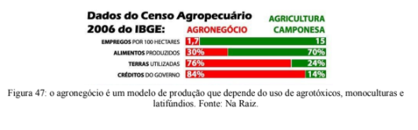
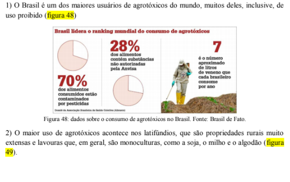

Capítulo 5
INDÚSTRIA ALIMENTÍCIA: BIOTECNOLOGIA A SERVIÇO DO AUMENTO DA PRODUÇÃO
QuestãoA biotecnologia pode mesmo acabar com a fome na Terra?
Contextualizando
As técnicas tradicionais de cultivo e produção de alimentos seguem o ritmo dos processos ecológicos e metabólicos dos seres vivos envolvidos. Quando somamos a isso a organização atual da maioria das sociedades humanas surge um problema. A demanda de produção de alimentos e econômica pede por ritmos muito mais acelerados. Queremos que todos os tipos de alimentos estejam disponíveis ininterruptamente, que tenham um tempo de validade maior, que sejam viçosos (sem marcas, grandes, brilhantes), ricos em nutrientes, resistentes a pragas, etc. Enfim, queremos alimentos que não existem na natureza.
Ao longo da história da agricultura, a humanidade desenvolveu técnicas para garantir o melhoramento (como a seleção de sementes), a produção agrícola (como irrigação e fertilização) e o processamento dos alimentos (como o refino e esterilização) (figura 39). Entretanto, apenas no século XX, com o fortalecimento da genética, as técnicas de manipulação foram sofisticadas.
A biotecnologia é um ramo novo da ciência, e ainda há muitas dúvidas e poucos testes que garantir que as técnicas utilizadas por ela são efetivamente seguras. Entretanto, é inegável o quanto a biotecnologia impulsionou o aumento na produção de bens derivados de seres vivos.
(RE)CONSTRUINDO CONHECIMENTOSA genética moderna surgiu a partir das descobertas de Watson e Crick relacionadas ao DNA. O estudo envolve áreas que, atualmente, apresentam enorme aplicabilidade como a clonagem, o uso de células-tronco, reprodução assistida, entre outros.
Biotecnologia é um processo tecnológico que permite a utilização de material biológico para fins industriais, medicinais, farmacêuticos ou na agropecuária.
VOCÊ SABIA?Os processos biotecnológicos são responsáveis pela produção de itens para diversos setores da sociedade. Veja alguns exemplos de aplicações da biotecnologia na imagem abaixo (figura 40).
A engenharia genética, de uma maneira geral, envolve a manipulação do material genético de qualquer espécie para atender a demandas humanas. Os primeiros experimentos acontecerem por volta dos anos 1970, e chamaram atenção por tentar produzir algo que antes era apenas imaginação: clones.
A clonagem é um processo que visa criar uma réplica exata de um organismo. A ovelha Dolly ficou mundialmente famosa, pois foi o primeiro mamífero clonado com sucesso (figura 41). A clonagem envolve a retirada do núcleo de uma célula do indivíduo a ser clonado que será implantado em um óvulo cujo núcleo foi retirado. Nesse caso não há a fecundação do óvulo por um espermatozoide, pois o núcleo implantado já contém todo o material genético necessário. Apesar do sucesso da clonagem, a técnica apresentou alguns erros. Com o passar do tempo foi percebido que Dolly apresentava envelhecimento celular precoce, sofria de artrite no quadril e joelho da pata traseira esquerda. A hipótese é que isso tenha ocorrido, pois ela foi criada a partir de uma célula adulta de seis anos (idade da ovelha doadora do núcleo), e não de um embrião. Dolly foi sacrificada aos 6 anos de idade, depois de uma vida marcada por envelhecimento precoce e doenças.
O uso de células-tronco também é um trunfo biotecnológico. As células-tronco são células que ainda não se diferenciaram, ou seja, ainda não possuem uma função específica no corpo. Sua característica mais impressionante: elas têm a habilidade de se transformar em qualquer tipo de célula (células do coração, cérebro, rins, gordura, retina, etc.). São encontradas em embriões (com poucos dias de desenvolvimento), no cordão umbilical, na medula e em alguns outros locais. Com os estímulos adequados as células-tronco podem ser utilizadas no cultivo em laboratório de tecidos e até mesmo de órgãos, fato que as torna excelentes apostas na cura de muitas doenças ou lesões (figura 42).
O uso de impressão digital de DNA (DNA fingerprint) tem se popularizado, principalmente, em análises forenses. A partir de "tesouras moleculares" (que nada mais são do que enzimas capazes de cortar o DNA em regiões específicas) é possível selecionar fragmentos de DNA que são sequenciados para obter perfis genéticos únicos. A partir daí, é formada uma espécie de código de barras que é a identificação individual e intransferível de cada indivíduo (figura 43).
A impressão digital de DNA recebe esse nome, pois, assim como as impressões digitais em nossos dedos são únicas, muito úteis na investigação de paternidade, na identificação de vítimas e de criminosos.
As novas tecnologias permitiram o desenvolvimento de organismos geneticamente modificados e de transgênicos. Cuidado para não se confundir, esses dois termos se referem a técnicas sutilmente diferentes de manipulação genética! Os organismos geneticamente modificados (OGMs) são manipulados geneticamente para acentuar características desejadas. Já os transgênicos são uma categoria especial de OGMs em que os materiais genéticos de duas ou mais espécies são misturados para que haja a expressão de características provenientes de ambos (figura 44).
A transgenia usa a técnica de DNA recombinante para produzir organismos que não existem na natureza. Essa técnica adiciona pequenos fragmentos de DNA ao material genético de uma outra espécie (figura 45). Isso é particularmente interessante quando queremos produzir alguma proteína em grande escala. A célula que recebe esse fragmento (célula recombinante), em geral, é de um microrganismo que se reproduz rapidamente, principalmente, bactérias. Consiste em um processo bastante delicado, pois envolve inserir não apenas o gene de interesse, mas também toda a região do DNA responsável por controlar a atividade desse gene.
A produção de insulina transgênica (utilizada no tratamento de diabetes) é um exemplo real de como o DNA humano é combinado com o DNA bacteriano (no caso, com a espécie Escherichia coli) para a produção em massa de uma substância.
O principal uso dessa tecnologia faz-se pela alteração de animais e plantas que podem crescer mais e melhores. Essas técnicas permitem a alteração da bioquímica e do próprio balanço hormonal do organismo transgênico. Muitos criadores de animais, por exemplo, dispõem de raças maiores e mais resistentes a doenças graças a essas técnicas. Isso também é observado pelo número crescente de plantas tolerantes a herbicidas e a determinadas pragas disponíveis no mercado.
Uma nova variedade de algodão, por exemplo, foi desenvolvida a partir da utilização de um gene oriundo da bactéria Bacillus thuringensis, que produz uma proteína extremamente tóxica a certos insetos e vermes, mas não a animais e aos humanos. Essa planta transgênica ajudou na redução do uso de pesticidas químicos na produção de algodão. Além da resistência, vários cultivares têm o valor nutricional alterado, modificando o teor de óleo e até mesmo o fotoperíodo (número de horas mínimo que uma planta deve estar em contato com a luz para florescer).
PARA SABER MAIS...
Transgênicos e a Revolução Verde
Revolução Verde foi o nome que se deu ao conjunto de técnicas e tecnologias aplicadas à agricultura de vários países do mundo, incluindo o Brasil, a partir dos anos 1950. Foi responsável pela implantação de uma lógica industrial no campo (figura
O uso de sementes geneticamente modificadas, de fertilizantes e de agrotóxicos em larga escala, agricultura extensiva, monoculturas e a mecanização da lavoura converteu-se no que hoje é conhecido como o agronegócio. A finalidade ideológica do projeto era acabar com a fome no planeta através do investimento na produtividade, porém constata-se que, após mais de 60 anos, cerca de 1 bilhão de pessoas ainda vai dormir com fome na Terra. E não apenas isso, a Revolução Verde provocou, no Brasil e em outros países em desenvolvimento, um enorme êxodo rural nas décadas seguintes a sua implantação. Sem trabalho no campo, as pessoas se dirigiram para as cidades a procura de uma vida melhor, e esses centros urbanos, sem ter como absorver o impacto da chegada dos retirantes, acabaram assistindo ao início da formação dos enormes bolsões de miséria que envolvem as principais cidades brasileiras até hoje (figura 47).
A monocultura extensiva destruiu uma enorme parcela das florestas nativas brasileiras, que sempre foram um dos maiores repositórios de biodiversidade do planeta. O excesso de agrotóxicos causou e causa danos à fauna silvestre e à população brasileira, que acaba ficando exposta aos defensivos agrícolas e desenvolvendo diversos problemas de saúde, incluindo vários tipos de câncer, principalmente no sistema digestório.
Durante os últimos 10 mil anos, o ser humano utilizou cerca de 7 mil espécies de plantas e a estimativa é de que cerca de 75 mil espécies poderiam ser utilizadas, mas o que se observa é que 90% do alimento consumido pela humanidade hoje envolve aproximadamente 30 espécies.
A UTILIDADE DOS PRODUTOS TRANSGÊNICOS
Com técnicas similares àquelas da produção de insulina humana em bactérias, muitos produtos com utilidades biofarmacêuticas podem ser produzidos nesses animais e plantas transgênicas. Por exemplo, pesquisadores desenvolveram vacas e ovelhas que produzem quantidade considerável de medicamentos em seus leites. O custo dessas drogas é muito menor do que os produzidos pelas técnicas convencionais.
Apesar de todos os avanços, o uso de transgênicos na alimentação suscita debates e reivindicações importantes por parte da sociedade organizada. Várias entidades alegam não existir pesquisa suficiente para demonstrar a segurança no consumo de tais alimentos.
A biotecnologia tem acelerado o desenvolvimento de diversos setores da sociedade ao realizar feitos que há poucas décadas eram apenas imaginação. Ela traz a tona debates muito importantes em bioética. A bioética é uma área de estudo que se dedica a pensar a ética das nossas relações com os seres vivos. As discussões que ela propõe problematizam a conduta dos seres humanos e definem alguns limites que não podem ser ultrapassados. Os debates sobre transgênicos, clonagem de humanos e testes em animais são alguns dos temas abordados.
AÇÃO E REFLEXÃO
Os organismos transgênicos suscitam debates acalorados entre determinados grupos da sociedade. De um lado grandes empresas e latifundiários afirmam que seu consumo é totalmente seguro e do outro pesquisadores e organizações da sociedade civil apontam que não há testes suficientes para que se garanta a segurança alimentar.
Os organismos transgênicos suscitam debates acalorados entre determinados grupos da sociedade. De um lado grandes empresas e latifundiários afirmam que seu consumo é totalmente seguro e do outro pesquisadores e organizações da sociedade civil apontam que não há testes suficientes para que se garanta a segurança alimentar.
